绣球Hydrangea
DAYS — The Ordinary Hours
学校是一间很大的暗房。
绣球开在树荫下面，银杏把整条路点着，操场边的下午很长，黄昏的云一直压在校舍的屋顶上。
我在这里拍了一年零散的日常，直到承认日常本身就是一种题材。
A campus is a very large darkroom. Hydrangeas under the shade, ginkgo lighting up the whole avenue, long afternoons by the field, and a cloud sitting low on the school roof. I shot loose fragments here for a year before admitting that the everyday is a subject in its own right.
校园是一间大暗房


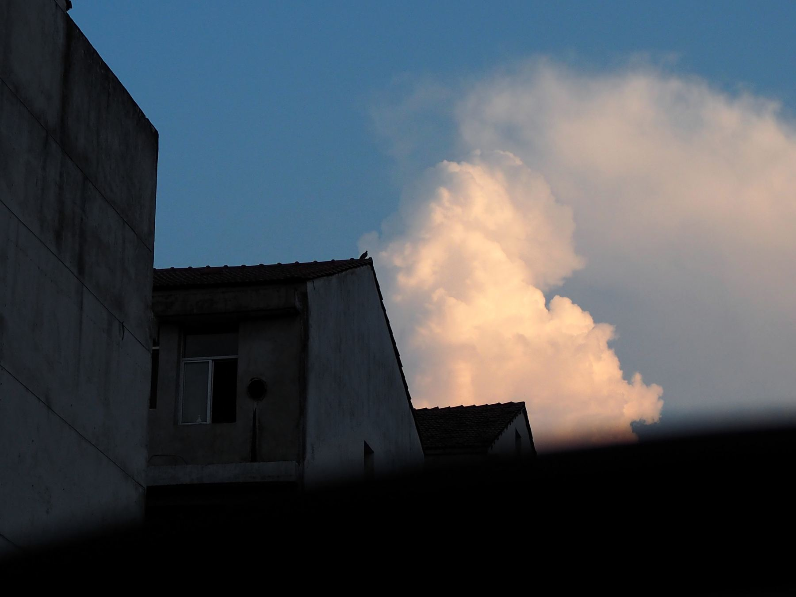
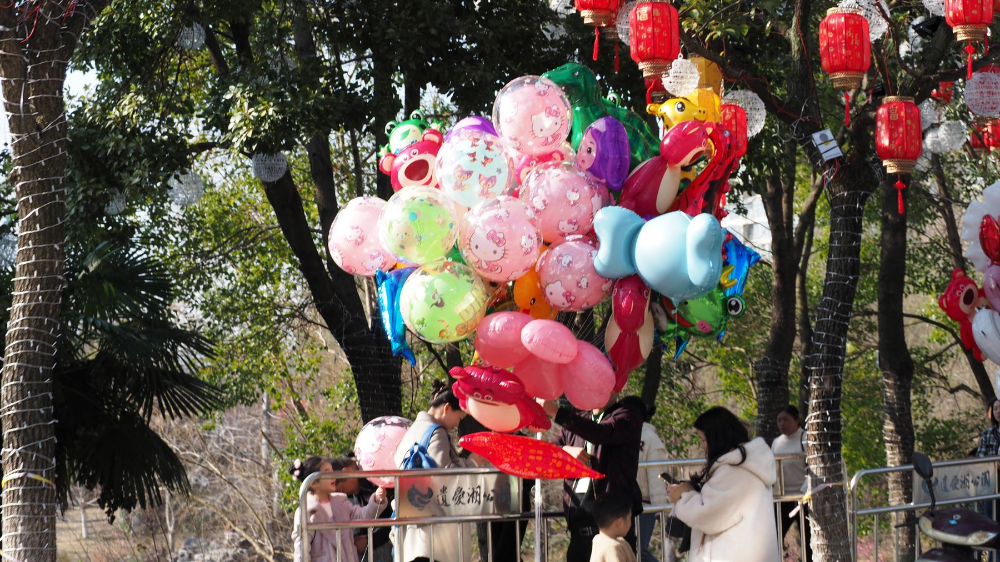

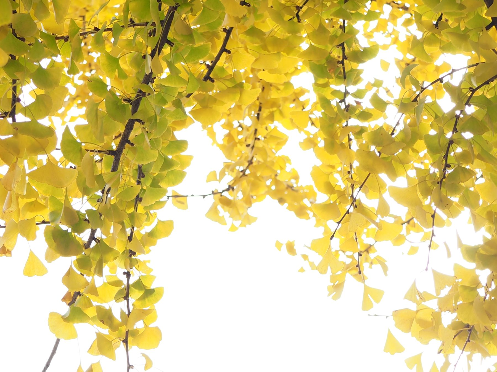

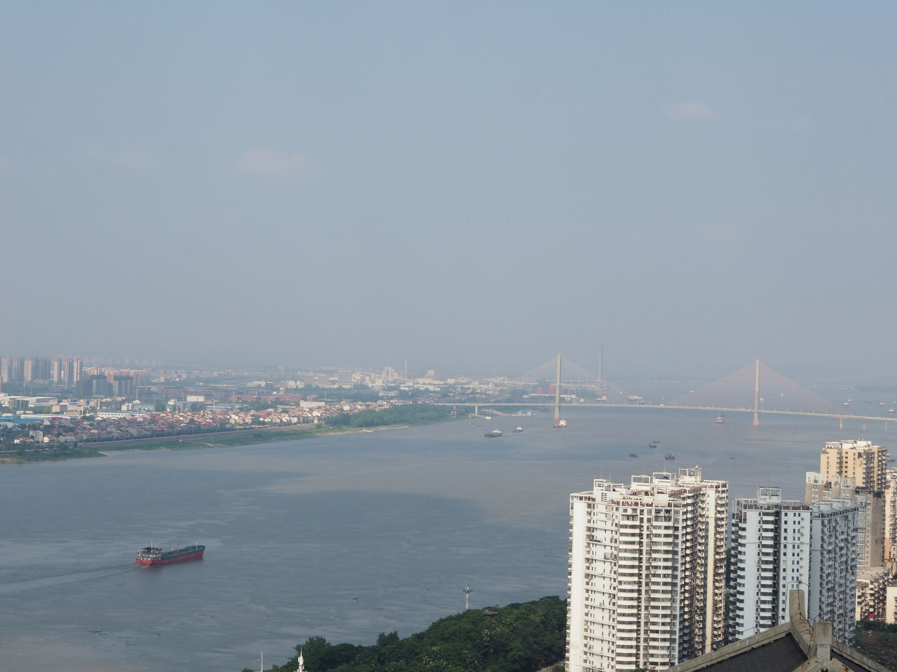
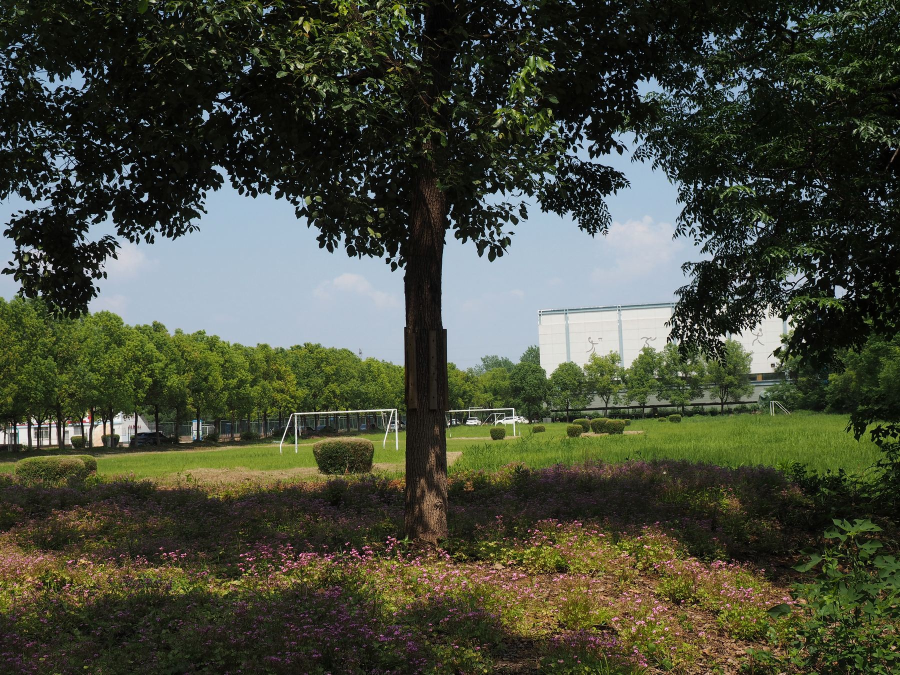
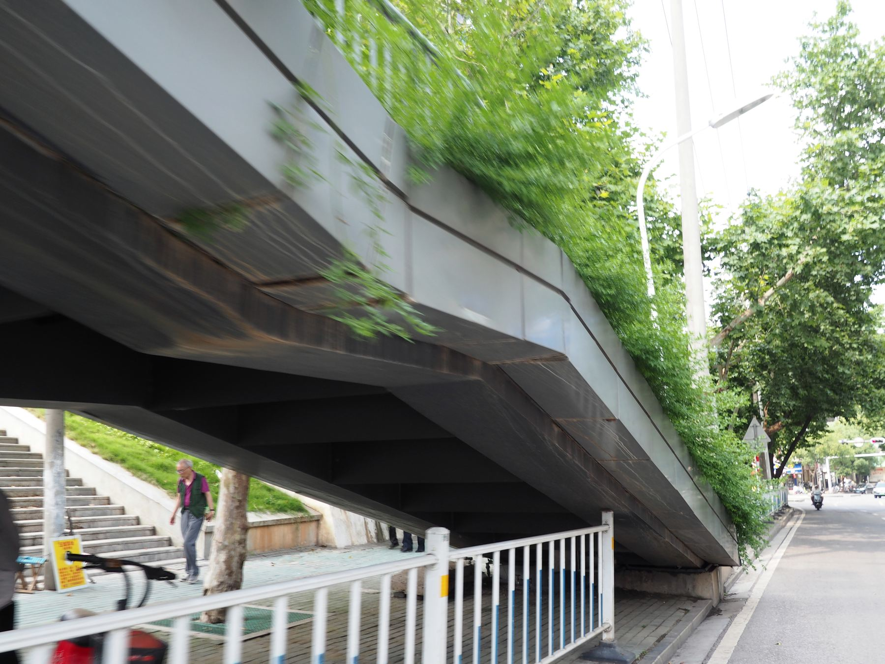
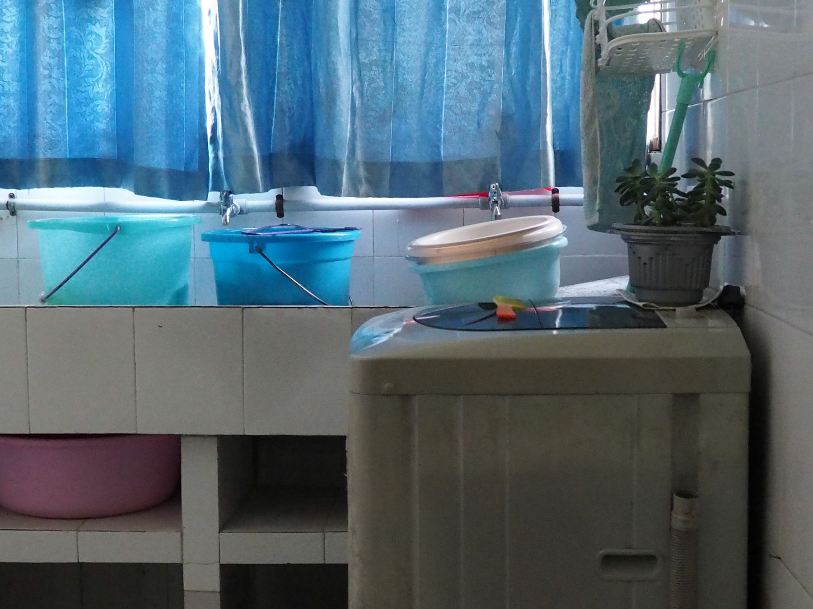
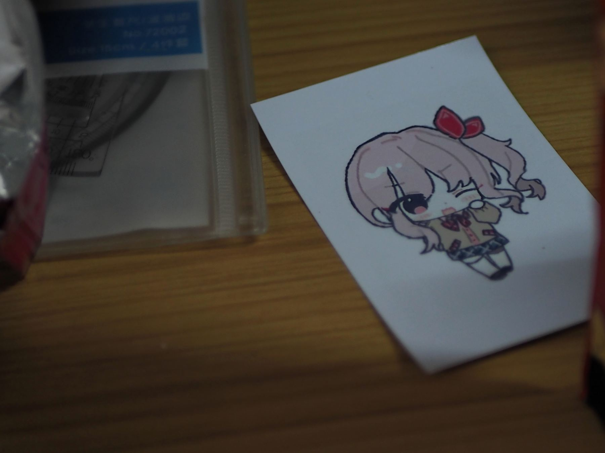
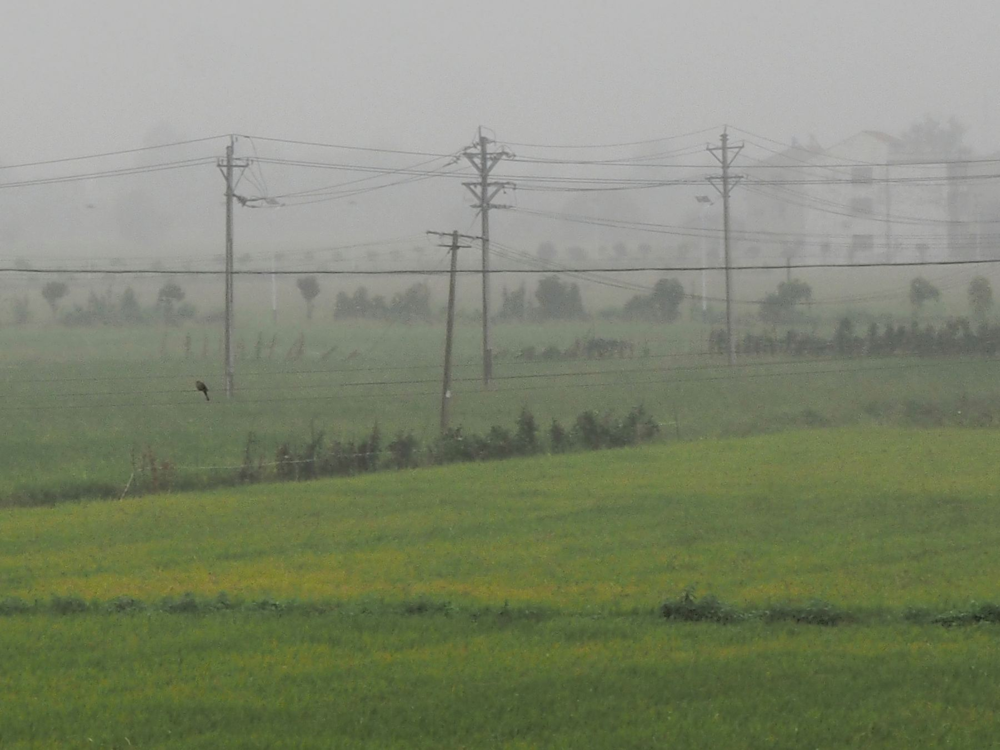
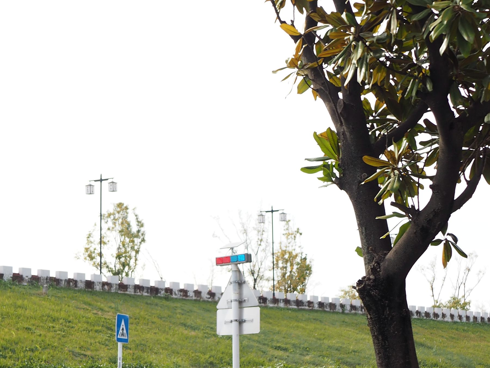
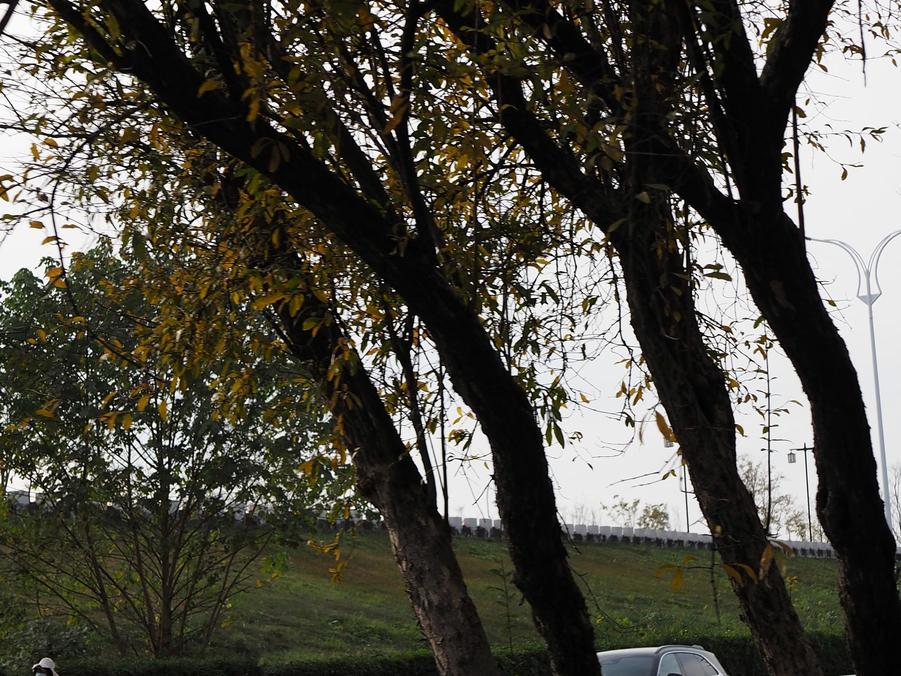
旅